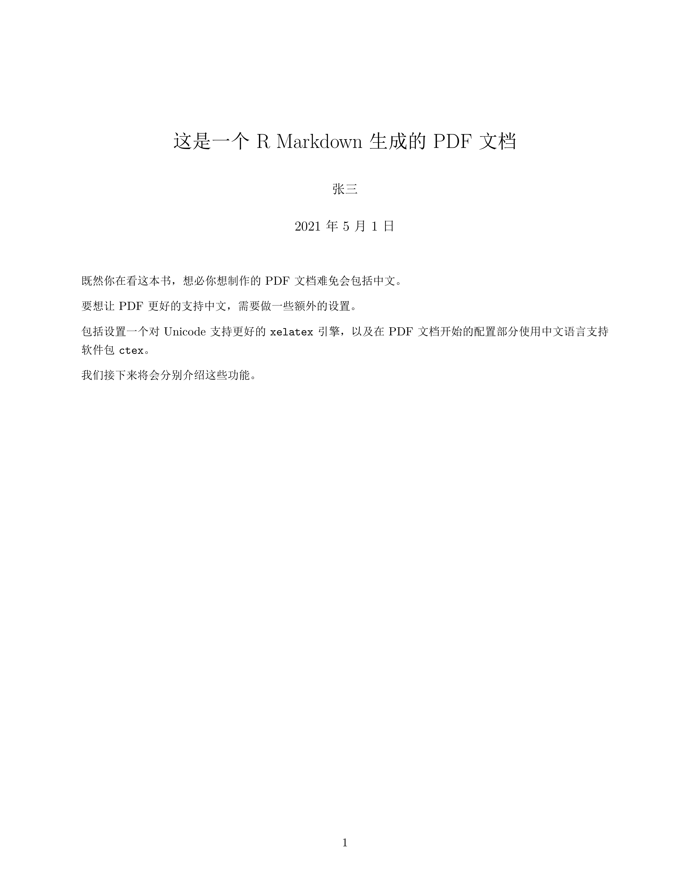

第 6 章 PDF 文档
这一章讲述将 rmarkdown 输出为 PDF 的一些技巧。
PDF 是便携式文档格式（Portable Document Format）的缩写，这是一种常见的文档格式， 特别是在文件、学术论文中广泛使用。它具有文件体积小、保真度高和安全的特点。
R Markdown 并不能直接输出 PDF 文档，而是会输出 LaTeX 文件，LaTeX 文件经过处理后生成 PDF。 因此，使用 R Markdown 输出 PDF 文件时，可以充分发挥 LaTeX 的优势。在需要的时候，可以直接使用 LaTeX 代码编写内容，应用 LaTeX 的包和模板，添加标题、脚注、子图等。
不过，LaTeX 技术对于大多数人可能都还比较陌生，而在生成 PDF 文档的过程中，很多问题都跟 LaTeX 的 配置有关。这几乎是不可避免的，因此在开始正式的内容前，我们需要来了解一下常见问题的解决方法。
6.1 安装 TinyTex
LaTex 有很多发行版，如 MiKTex，MacTeX， TeX Live 等，我们建议 R Markdown 的用户使用 TinyTeX。TinyTex 的开发者与 R Markdown 都是谢益辉，因而是最佳拍档。它占用空间小，配置灵活。
knitr::include_graphics("images/logo-tinytex.png")
要安装 TinyTex，只需要在 R 语言终端输入两条命令即可1。
# 安装 tinytex
install.packages("tinytex")
tinytex::install_tinytex()6.1.1 安装 LaTeX 组件
LaTex 有非常多的组件，也被称为包（“package”）。tinytex::install_tinytex() 只安装了
必须的一些组件，在实际使用过程中经常会出现缺少组件的错误。
如果你知道包的名称，那么可以直接使用下面的命令安装。这里值得注意的是，对于国内的用户来说， 通常需要设定一下 LaTeX 软件仓库的位置。下面的例子中，使用了清华大学的 TeX Live 镜像。
# install required Latex package
tinytex::tlmgr_repo(url = "https://mirrors.tuna.tsinghua.edu.cn/CTAN/systems/texlive/tlnet")
tinytex::tlmgr_install(c('pgf', 'preview', 'xcolor'))如果不知道包的名称也没有关系，tinytex 也提供了相应的函数来帮助你从报错信息中找到解决方法。
tinytex::parse_install() 提供两种方法，第一种是通过准确的错误提示，第二种是通过分析 log 文件。
如果嫌 log 太长或者找不到具体提示信息，还可以使用第二种办法。
# 假如有相关报错信息 "! LaTeX Error: File `preview.sty' not found."
tinytex::parse_install(text = "! LaTeX Error: File `preview.sty' not found.")
# 假如我们有一个错误 log 名为 tex.log
tinytex::parse_install(log = "tex.log")6.2 从 R Markdown 到 PDF 文档
接下来我们进入正题。要输出 PDF 文档，只需要在 R Markdown 开头的 YAML 配置中指定
pdf_document 即可。
---
output: pdf_document
---只需要这样一个改动，你就可以得到一份 PDF 文档。
6.3 在 PDF 文档中使用中文的注意事项
如果这份 PDF 中仅含有英文，那么不需要做额外的设置。 但是对于中文用户而言，可能会出现错误。这是因为，PDF 所依赖的 LaTeX 系统对中文的支持与 HTML 不同，需要做一些合适的设置。
下面就是一份中文 PDF 文档的示例。
import_example("examples/PDF-document-in-chinese.Rmd")---
title: "这是一个 R Markdown 生成的 PDF 文档"
author: "张三"
date: "2021年5月1日"
output:
pdf_document:
latex_engine: xelatex
header-includes:
- \usepackage{ctex}
---
既然你在看这本书，想必你想制作的 PDF 文档难免会包括中文。
要想让 PDF 更好的支持中文，需要做一些额外的设置。
包括设置一个对 Unicode 支持更好的 `xelatex` 引擎，以及在 PDF 文档开始的配置部分
使用中文语言支持软件包 `ctex`。
我们接下来将会分别介绍这些功能。将这份 R Markdown 编译后，将会生成一份 PDF 文档。
import_example_result("examples/PDF-document-in-chinese.Rmd")
这个配置中的内容将会在后面解释。
6.3.1 显示目录
使用 toc 在 PDF 文档中加入目录，toc_depth 控制目录的深度。这点与 HTML 文档的用法一致2。
---
title: "五一劳动节加班三倍工资"
author: "张三"
date: "2021年5月1日"
output:
pdf_document：
toc: true
toc_depth: 2
---如果 toc_depth 没有指定，则默认索引到二级标题（在 HTML 文档中默认索引到三级标题）。
使用 number_sections 可以在标题前面加入编号。
---
title: "五一劳动节加班三倍工资"
author: "张三"
date: "2021年5月1日"
output:
pdf_document：
toc: true
toc_depth: 2
number_sections: true
---6.3.2 图片相关的配置
fig_width和fig_height用于控制图片默认的宽和高（默认为 6.5 x 4.5 英寸）。fig_crop控制pdfcrop的效果，功能是帮助我们去掉图片边缘的空白（默认为true）。pdfcrop是一个 LaTeX 组件，默认并没有被tinytex安装。我们推荐用户运行tinytex::tlmgr_install("pdfcrop")来安装它。同时，pdfcrop依赖于系统中的存在的ghostscript，你还需要安装ghostscript才能正常使用pdfcrop。fig_caption控制是否为图片添加图注（默认为true）。dev控制用于渲染图片的图像设备（默认为pdf）。
---
title: "五一劳动节加班三倍工资"
author: "张三"
date: "2021年5月1日"
output:
pdf_document：
fig_width: 7
fig_height: 6
fig_caption: true
---6.3.3 打印数据框
通过配置 df_print，可以调整打印数据框的格式（表 6.1）。
| 配置 | 说明 |
|---|---|
| default | 调用 print.data.frame 泛型函数 |
| kable | 使用 knitr::kable() 函数 |
| tibble | 使用 tibble::print.tbl_df() 函数 |
| 一个自定义函数 | 使用自定义函数创建一个表格。参见 ?? |
---
title: "五一劳动节加班三倍工资"
author: "张三"
date: "2021年5月1日"
output:
pdf_document：
df_print: kable
---6.3.4 代码高亮
与 HTML 文档相同，这里可用 highlight 参数配置代码高亮的样式（参见 5.2 部分内容）。例如：
---
title: "五一劳动节加班三倍工资"
author: "张三"
date: "2021年5月1日"
output:
pdf_document：
highlight: tango
---6.4 LaTeX 选项
很多 LaTeX 的配置，可以通过头部 YAML 的设定传递给 PDF 文档。
6.4.1 通用文档部件
一个 LaTeX 文档的结构大概是这样子：
\documentclass{article}
% preamble
\begin{document}
% body
\end{document}在这个文档中，你首先通过 \documentclass{} 指定了文档的类，然后在 preamble 部分导入一些 LaTeX 的包（组件）和进行必要的设置，接下来在 \begin{document} 后开始文档的主体内容。
一个 Markdown 文档基本上是 body 部分的内容。
如果需要在 preamble 部分加入一些内容，则可以使用 includes 选项。该选项包括 3 个
部分：in_header，before_body 和 after_body。每一个都支持一个或多个文件路径。
in_header 指定文件的内容将会被添加到 preamble 部分，before_body 和 after_body 指定文件的内容会分别被添加到 body 的前面和后面。
举例来说，下面的一个小技巧可以将正文中的链接地址以脚注的形式显示在 PDF 文档中，
这对于打印出来的文本而言，避免了无法看到链接地址的尴尬。我们将这几行代码保存为 tex 文件，
导入到 preamble 部分，就可以实现这一功能。
% you may want to save a copy of \href before redefining it
% \let\oldhref\href
\renewcommand{\href}[2]{#2\footnote{\url{#1}}}如果保存的文件名为 preamble.tex 则可以通过下面的形式将其添加到所有的 PDF 页面中。
output:
pdf_document:
includes:
in_header: "preamble.tex"不过，Pandoc 默认的 LaTeX 模板中已经内嵌了这一用法，所以实际上你可以直接设置 links-as-notes 为 true 即可。
output:
pdf_document:
links-as-notes: true在本书的 PDF 版本中，就使用了这种方法来添加页眉、页脚等内容。
6.4.2 选择 LaTeX 模板
通过 template 可以指定输出 PDF 文档时采用的 LaTeX 模板。
---
output:
pdf_document:
template: quarterly-report.tex
---6.4.3 配置 LaTeX 模板的参数
每个 LaTeX 模板会有很多参数，用来指定文档的语言、字体、文字大小、页边距等内容。 表 6.2 列示了常见的一些参数，完整的参数则可以在 Pandoc 手册 中查看。
| 变量名称 | 说明 |
|---|---|
| lang | 文档的语言代码 |
| fontsize | 文字大小 （如 10pt，11pt，12pt） |
| documentclass | LaTeX 文档类型 （如 article） |
| classoption | 文档类型的选项（如 oneside） |
| geometry | 页边距（如 margin=1in） |
| mainfont, sansfont, monofont, mathfont | 文档的字体（仅在使用 xelatex 和 lualatex 时可用） |
| linkcolor, urlcolor, citecolor | 内部链接、外部链接和引文链接的颜色 |
使用这些参数的时候，需要将其写在 YAML 头信息的最顶层，例如：
---
title: "这是一个PDF"
output: pdf_document
fontsize: 11pt
geometry: margin=1in
---6.4.4 使用 LaTeX 包处理引用
默认情况，文档中的引用使用 pandoc-citeproc 来处理，这种方法不限制输出文档的类型，适用性最广。
不过，在 LaTeX 系统中有更加优秀的引用工具，例如 natbib 和 biblatex。
如果想使用它们，只需要在 citation_package 中指定即可。
---
output:
pdf_document:
citation_package: natbib
---6.4.5 LaTeX 的渲染引擎
PDF 文档默认通过 pdflatex 渲染。其它可用的引擎还包括 pdflatex，xelatex和lualatex等。
不同的引擎可通过 latex_engine 来选择。
一般情况下，使用 xelatex 或者 lualatex 的主要理由是它们对 Unicode 的支持更加优秀，
以及它们更容易使用系统中已有的字体3。
---
output:
pdf_document:
latex_engine: xelatex
---6.4.6 保留生成的 TeX 中间文件
R Markdown 首先转化为 TeX 文件，然后才能转化为 PDF 文档。默认情况下，PDF 文档生成后，TeX 文档将会被删除。通过改变 keep_tex 的设置，可以保留生成的 TeX 文档（可用于向某些杂志投稿）。
---
output:
pdf_document:
keep_tex: true
---TinyTex与tinytex并不是一个东西。前者是一个 LaTeX 发行版，后者是一个用来安装和维护 前者的 R 语言软件包。↩︎实际上很多配置的名称都保持一致，但是也有不少会跟文档格式有关。如果有个配置没有效果，可能会跟配置的适用范围有关。↩︎
在 https://tex.stackexchange.com/q/3393/9128 和 https://tex.stackexchange.com/q/36/9128 这两个网页中对这一问题有更多的解释。↩︎